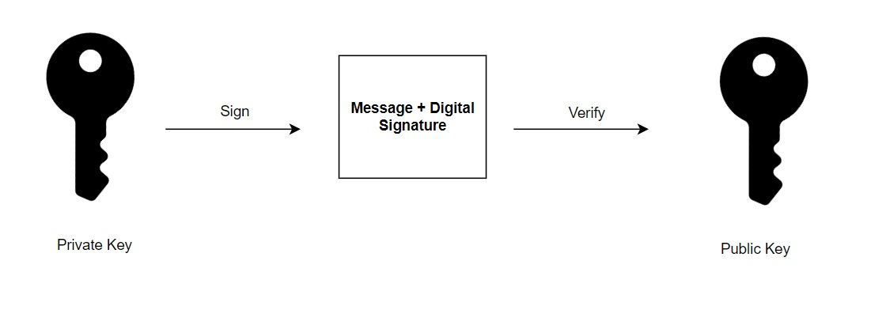

Edge (E) Device Security Patterns¶
Pattern E1: Cryptographic Key Generation¶
Ensures that ITS devices generate and store private/public key pairs securely on the device itself. This pattern supports device authentication, message integrity, and data confidentiality by embedding trust at the hardware level. Generating keys locally eliminates the need to transmit private keys, reducing exposure risk. It also enables strong binding between the cryptographic identity and the physical device. This pattern is foundational to maintaining trust in message authentication, certificate provisioning, and secure communication in V2X environments.
ITS devices are configured to generate and store cryptographic key pairs used for digital signatures. These keys enable message receivers to validate the identity of the sender and confirm the integrity of the message content. Key generation should occur on the device to reduce the risk of key exposure. Each key pair includes a private key, which must be kept secure, and a public key, which can be shared freely.

Do not allow the private key to be exported from the device. If compromised, it can be used to impersonate the device in any V2X transaction. The public key, in contrast, is designed for distribution and is shared through digital certificates issued by a Public Key Infrastructure (PKI). Other devices and services use the public key to authenticate signed messages or encrypt data sent to the device.
Implementation Context¶
Used in Roadside Units (RSUs), Onboard Units (OBUs), and trusted backend components that participate in V2X messaging, session establishment, or certificate-based authentication. Commonly implemented during device onboarding or factory initialization.
Key Components¶
| Component | Description |
|---|---|
| On-Device Key Pair Generation | Devices must generate private/public key pairs internally using secure cryptographic modules (e.g., TPMs, HSMs, or Secure Elements). |
| Private Key Protection | The private key must remain inside the secure hardware boundary and must not be exportable or accessible through any external interface. |
| Public Key Export and Use | The public key is extracted and embedded into a certificate for use in signing messages and enabling authentication by other parties. |
| Hardware Entropy Source | Random number generators used during key generation must be compliant with NIST SP 800-90A or equivalent. |
| Key Generation Logging | Log generation events (without exposing key material) to establish provenance and support traceability during audit or diagnostics. |
Implementation Details¶
- Devices should implement FIPS 140-2/3 or equivalent protections for cryptographic operations.
- Key pairs should be generated using ECC algorithms, such as NIST P-256 or BrainpoolP256r1, as required by the PKI policy in use (e.g., SCMS or CCMS).
- Secure wipe procedures must be implemented for cases where a key needs to be retired or replaced
Example Use Cases¶
| Scenario | Behaviour Enforced |
|---|---|
| Key Pair Generation | An RSU generates a key pair during onboarding, receives a certificate from the SCMS, and uses the key to sign MAP messages. |
| Pseudonym Certificate Keys | An OBU rotates pseudonym keys periodically, each generated within a secure element to ensure unlinkability and non-repudiation. |
| Backend Service Keys | A trusted backend service generates a long-lived signing key pair to authenticate traffic management commands sent to field devices. |
Related Standards¶
| Standard | Purpose |
|---|---|
| NIST SP 800-56A | Specifies key establishment and cryptographic random number generation requirements. |
| FIPS 140-3 | Security requirements for cryptographic modules. |
Pattern E2: Secure Device Configuration¶
Defines a baseline approach to configuring ITS devices securely prior to deployment. This pattern reduces the attack surface by disabling non-essential features, enforcing secure administrative access, and applying controls that ensure only trusted software is allowed to run. It also supports long-term operational security through auditability and revalidation of configuration state.
Implementation Context¶
Used during manufacturing, onboarding, and field installation of devices such as RSUs, OBUs, controllers, and gateways. Also relevant during firmware updates, re-imaging, or maintenance activities.
Key Components¶
| Component | Description |
|---|---|
| Baseline Hardening | Disable all unused network ports, wireless radios, services, and physical interfaces. Only enable what is necessary for the devices operational role. |
| Credential Update | Replace default usernames and passwords. Require strong, unique credentials for each device. |
| Administrative Access Controls | Implement role-based access control (RBAC) for device management interfaces. Enforce least privilege. |
| Multi-Factor Authentication (MFA) | Where supported, require MFA for administrative access to critical systems. |
| Secure Boot Enforcement | Devices must validate firmware signatures before execution to prevent unauthorized code execution. |
| Configuration Lockdown | Prevent unauthorized changes by requiring authentication and integrity checks before applying new configurations. |
| Logging and Audit Trails | Record all configuration changes in a tamper-resistant log. Include timestamps and origin of change. |
| Compliance Monitoring | Use automated or manual processes to periodically verify device configuration against the approved baseline. |
Implementation Details¶
- Configuration templates should be defined per device class and reviewed as part of the cybersecurity risk management process.
- Device vendors should provide verifiable documentation of supported hardening controls.
- Operators should validate configuration status prior to device activation using tools or procedures compatible with the deployment model (e.g., CLI, SNMPv3, RESTCONF, NETCONF, vendor interface).
- Devices should support secure remote management using mutually authenticated sessions (e.g., TLS 1.3 with client certificates).
- Secure boot status and configuration integrity should be remotely verifiable where possible.
Example Use Cases¶
| Scenario | Behaviour Enforced |
|---|---|
| Traffic Controller Hardening | All unused ports and services are disabled before field deployment, minimizing attack surface. |
| OBU Firmware Integrity | OBU verifies the digital signature of firmware images before booting, blocking unauthorized software. |
| Role-Based Access on RSU | RSU administrative interface enforces RBAC, allowing only authorized personnel to modify configurations. |
Related Standards¶
| Standard | Purpose |
|---|---|
| NIST SP 800-53 | Defines secure configuration baselines, least functionality, and compliance monitoring. |
| ISO/IEC 27002 | Provides baseline security controls for system configuration and hardening. |
Pattern E3: Tamper Detection and Response¶
Ensures that ITS devices are equipped with hardware-based protections that detect and respond to unauthorized physical access or environmental anomalies. Tamper detection mechanisms should trigger protective actions, such as logging the event or securely erasing keys if physical compromise is suspected. Tamper resistance ensures trust in devices even when they are deployed in unmonitored or high-risk locations.
Implementation Context¶
Applies to all field-deployed ITS components, including OBUs, RSUs, and controllers that store cryptographic credentials. Especially relevant for devices installed in physically accessible environments where physical security cannot be assumed.
Key Components¶
| Component | Description |
|---|---|
| Secure Hardware Modules | Devices must use tamper-resistant components (e.g., HSMs, TPMs, secure elements) to protect keys and execute cryptographic functions. |
| Tamper Sensors | Devices include physical or electronic sensors to detect intrusion attempts (e.g., voltage fluctuation, casing breach) |
| Zeroization Mechanisms | If tampering is detected, the device automatically erases keys and sensitive configuration data. |
| Tamper Event Logging | Events must be recorded locally and transmitted to backend monitoring systems upon detection. |
| Procurement Verification | Procurement and vendor validation processes must confirm the presence of tamper response capabilities and hardware key isolation. |
Implementation Details¶
- Cryptographic key material must be generated and stored within secure elements or equivalent tamper-resistant components.
- Tamper sensors may include switches, mesh detection layers, accelerometers, or voltage anomaly detectors.
- Upon triggering a tamper event, devices must:
- Invalidate or erase stored private keys.
- Log the event using a secure, non-volatile mechanism.
- Operators must validate tamper resistance through testing, certification (e.g., FIPS 140-3), or vendor documentation before deployment.
Example Use Cases¶
| Scenario | Behaviour Enforced |
|---|---|
| Cabinet Intrusion Detection | A roadside cabinet is opened unexpectedly, triggering a tamper event and key zeroization within the RSU. |
| Voltage Tampering Alert | An attacker applies an abnormal voltage to a device; the secure element detects the anomaly and triggers a shutdown. |
Related Standards¶
| Standard | Purpose |
|---|---|
| FIPS 140-3 | Security requirements for cryptographic modules, including tamper response criteria. |
| ISO/IEC 19790 | International standard for security requirements of cryptographic modules. |
| NIST SP 800-88 | Guidelines for media sanitization and secure data destruction. |
Pattern E4: ITS Station Access Control¶
This pattern defines how ITS Station Operators configure and enforce local policies that determine which messages, devices, and applications are permitted to interact with an ITS Station. Access control is implemented through policy-based filtering of message attributes, certificate fields, and interface traffic to ensure only authorized services can be invoked.
By evaluating each connection or message against locally defined rules, including PSIDs/ ITS-AIDs, SSPs, and certificate validity, this pattern prevents unauthorized or malformed data from reaching higher-layer functions. Access controls may also block or limit device interactions based on network origin, time of day, or operational roles.
Implementation Context¶
This pattern applies at the edge of the ITS Station, where local enforcement decisions are made before messages or connections are processed further. ITS Station Operators configure access policies during provisioning and maintain them throughout the lifecycle of the station. These policies are enforced within the device firmware or trusted software, ideally supported by vendor-provided tools and validation routines
Key Components¶
| Component | Role |
|---|---|
| Certificate Field Validation | Verifies that incoming messages contain valid PSID, ITS-AID, and SSP values that align with the stations authorized services |
| Interface Filtering | Applies ACLs or equivalent controls to restrict inbound traffic by IP range, port, or protocol |
| Policy Enforcement Engine | Evaluates messages against locally defined access rules before allowing processing or execution |
| Error Handling | Logs and discards unauthorized or malformed messages without disrupting legitimate operations |
Example Use Cases¶
| Scenario | Behaviour Enforced |
|---|---|
| Unauthorized Application Attempt | An RSU receives a message with an unrecognized PSID and drops it without processing. |
| Expired Certificate Detected | An inbound message includes an expired certificate and is rejected by the station. |
| Misconfigured SSP Filter | A vehicle sends a signal request without the correct SSP; the RSU denies the request. |
| Port Scanning Prevention | TCP ports not used by the RSUs services are blocked by default at the network layer. |
Related Standards¶
| Standard | Purpose |
|---|---|
| IEEE 1609.2 | Defines certificate structure and permissions via PSID and SSP fields. |
| IEEE 1609.3 | Describes network-layer messaging and supported protocols. |
Pattern E5: Anomaly Detection and Logging¶
This pattern enables ITS deployments to identify unusual system behaviour that may indicate a cyberattack, policy violation, or device malfunction. Anomalies are detected through local inspection of message content, system states, or operational patterns, and are logged in structured, tamper-resistant formats. Logs are either stored locally or forwarded to a backend system for centralized analysis and response coordination.
Implementation Context¶
This pattern applies across ITS devices, particularly OBUs, RSUs, and backend services that enforce security policies or observe message flows. Detection logic can include policy-based filters, plausibility checks, or statistical anomaly thresholds. Devices must log key security events locally and support export via secure interfaces to backend monitoring systems.
Backends must aggregate logs from multiple sources, correlate behaviour across time and geography, and prioritize events that warrant operational response. Operators should implement log retention, access control, and validation practices aligned with regional privacy and audit requirements.
Note: This Pattern is separate from the local misbehaviour detection pattern, which focuses on identification of misbehaving vehicles and infrastructure. Pattern E2 is important for basic security event detection, such as malware detection, unauthorized access, etc.
Key Components¶
| Component | Role |
|---|---|
| Local Anomaly Detection Logic | Performs on-device evaluation to identify suspicious behaviour or policy violations |
| Security-Relevant Logging | Records key events such as failed authentications, invalid messages, and configuration changes |
| Tamper-Resistant Log Storage | Protects log files from modification using cryptographic integrity checks or secure storage hardware |
| Backend Log Aggregation | Collects logs from multiple devices to detect system-wide anomalies and support coordinated response |
Example Use Cases¶
| Scenario | Behaviour Enforced |
|---|---|
| Suspicious Certificate Usage | An RSU logs repeated messages from a vehicle using an expired or revoked certificate. |
| Unexpected Configuration Change | A device logs a sudden firmware version change outside approved maintenance windows. |
Related Standards¶
| Standard | Purpose |
|---|---|
| NIST SP 800-92 | Provides guidance on log management, analysis, and retention. |
Pattern E6: Software Integrity Verification and Secure Boot¶
Software integrity verification and secure boot prevent unauthorized or modified code from executing on ITS Stations. These mechanisms enforce a chain of trust from device startup through operational runtime by validating that all software and firmware components originate from trusted sources and remain unaltered.
Secure boot verifies digital signatures on firmware and software images at each boot stage. If signatures are missing or invalid, the boot process is halted or redirected to a safe recovery state. This process ensures that only authorized, vendor-approved software runs on field-deployed devices such as RSUs, OBUs, and roadside controllers.
ITS Station Operators must verify that vendors support secure boot and signed software updates. Devices must include hardware or firmware-based enforcement mechanisms (e.g., ROM-anchored keys, TPMs, or secure elements) and validate signatures using trusted certificate chains. Software distribution pipelines must be secured to prevent insertion or modification of signed packages.
Implementation Context¶
| Applies To | RSUs, OBUs, backend-managed ITS controllers, secure update tools |
|---|---|
| Used For | Device boot processes, firmware updates, runtime software validation |
| Dependencies | Vendor-issued digital signatures, root-of-trust in hardware, access control on update processes |
Key Components¶
| Component | Role |
|---|---|
| Bootloader with Signature Verification | Enforces validation of firmware before booting higher-level code |
| ROM-anchored Trust Anchor | Stores unmodifiable public keys used to verify bootloader integrity |
| Cryptographically Signed Firmware | Ensures only validated software is installed and executed |
| Update Mechanism with Verification | Applies updates only if signatures are valid and source is authenticated |
| Secure Storage for Keys | Protects signing keys and certificates used for verification processes |
Example Use Cases¶
| Scenario | Behaviour Enforced |
|---|---|
| RSU Firmware Validation | RSU verifies the firmware image signature before each boot cycle |
| OTA Update Enforcement | A backend system pushes signed software updates to OBUs, which verify integrity before applying |
| Runtime Code Validation | A roadside controller validates dynamically loaded modules before execution |
Related Standards and Controls¶
| Standard / Control | Purpose |
|---|---|
| NIST SP 800-147 | BIOS/firmware protection guidelines for secure boot |
| NIST SP 800-193 | Platform Firmware Resiliency Guidelines includes verification, recovery, protection |
| NIST SP 800-53 rev5 | Software, Firmware, and Information Integrity Controls |
| ISO 21434 | Requirements for software update integrity in road vehicles |